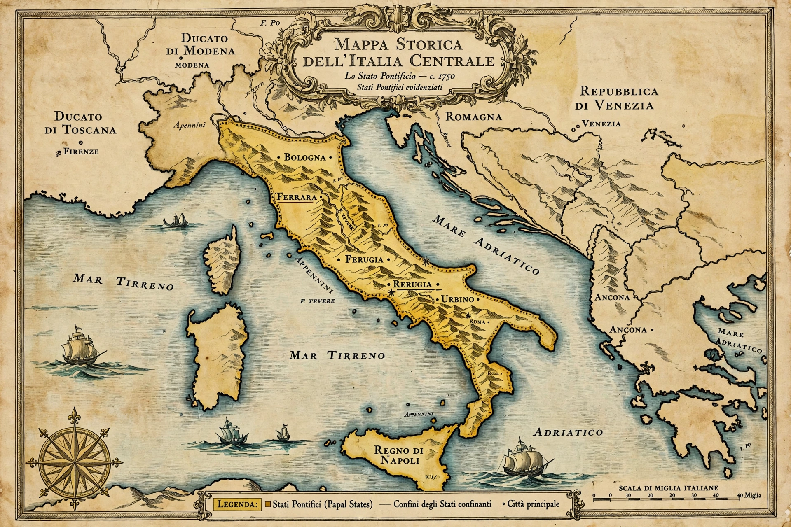

Papal States
| Papal States | |
|---|---|
| Existed | 754 – 1870 |
| Capital | Rome |
| Ruler | The Pope |
| Territory | Central Italy: Lazio, Umbria, Marche, Romagna (at various times) |
| Succeeded by | Kingdom of Italy; Vatican City (1929) |

The Papal States (Italian: Stato Pontificio) were the territories in central Italy ruled directly by the popes from the 8th century until 1870 — one of the major states of the Italian peninsula. Their origin is conventionally dated to the Donation of Pepin in 756, when the Frankish king Pepin the Short granted the pope lands seized from the Lombards around Rome, Ravenna and the Pentapolis.
History
Over the Middle Ages the popes consolidated — and sometimes lost — control of their territories amid struggles with emperors, Roman barons and rival cities. During the Renaissance, warrior-popes such as Julius II expanded and fortified the state, which included Bologna, Ferrara (from 1598), the Marche, Umbria and Lazio. The states survived the Reformation and the Napoleonic occupation (when they were twice abolished) and were restored by the Congress of Vienna in 1815.
End
The Italian unification movement (Risorgimento) stripped the popes of most territory in 1860; Rome itself, defended by French troops, held out until 20 September 1870, when Italian forces breached Porta Pia and annexed the city. Pius IX refused to recognise the loss, and the "Roman Question" festered until the Lateran Treaty of 1929 created the independent microstate of Vatican City.
See also: Pope, Donation of Pepin, Risorgimento, Lateran Treaty.